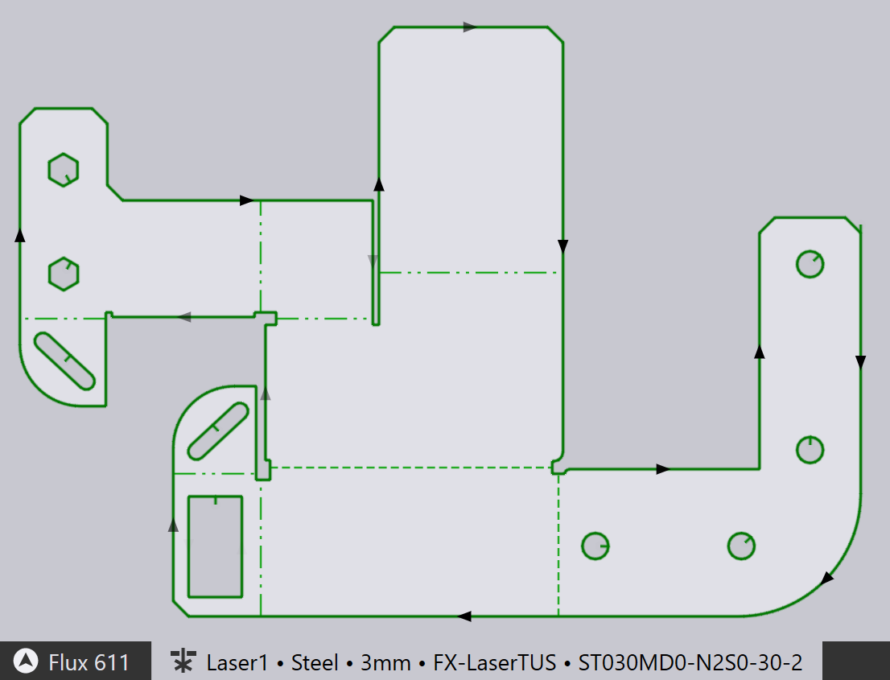
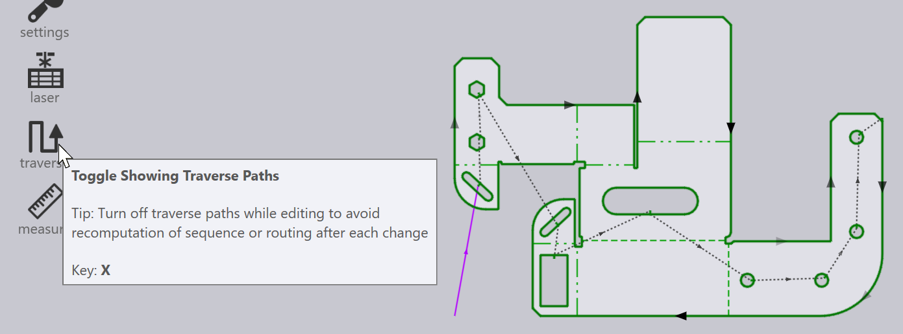
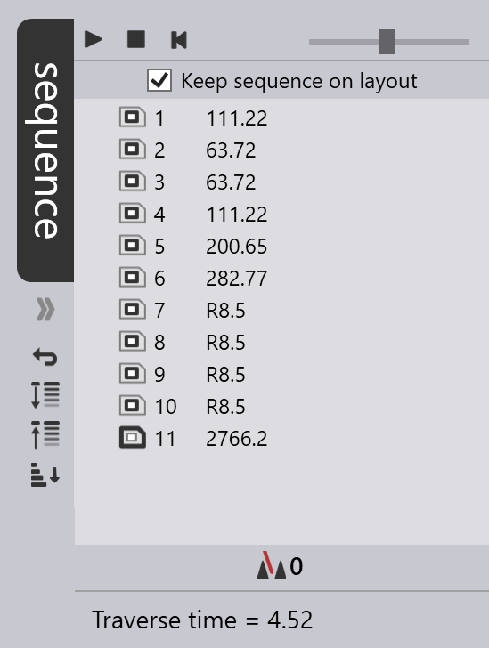

パーツ ワークフロー

切断CAMへの切り替え
これで、Lキーを押すだけでパーツのレーザ切断用にツーリングできます。 パーツには、_初期設定_で、最後に使用したレーザ加工機が設定されています。切断パス、アプローチセグメント、コーナー加工やツーリング順序などすべて設定済みで、以下が結果です：

下部のタブによると、パーツは、FX - LaserTUS マシンにツーリングされ、lTT （レーザテクノロジテーブル）ST 030 MD 0 - N 2 S 0 -30 -2 を使用します。
-
機械名をクリックして、別のマシンを選択すると、ツールを別のマシンにツーリングできます。
-
選択したマシン、材料、板厚で利用可能なLTTの中から、LTT名をクリックして別のものを選択すると、他の*LTT*を使用できます：

| ワークフローパネルも参照してください。これは、Wキーを押すとアクセスできます。これで、カッティングテクノロジ データ作成を細かく制御できる他、パーツの曲げ加工やネスティングのルーティングのオプションも利用できます。 |
順序ナビゲーター
自動ツーラーは、パーツのレーザ切断の_順序_も自動計算します。この同じパーツ内順序は、パーツが他のパーツとともにレイアウトに挿入される場合にも使用できます。左側ツールバーの 移動 設定を切り替えると（またはXキーを使用すると）、切断間の_移動線_がわかります。


順序を_編集_するには、ウィンドウの右端にある 順序ナビゲーター を開くか、タブの下にあるシェブロンをクリックするか、Zキーを押して下さい。パーツの各ツーリング項目の順序ナビゲーターへのエントリーは1つです。これら項目をドラッグ＆ドロップで移動すると、ツーリングの順序を変更できます。ここでは、次のコンターへの移動前にヘッドを上げるかどうかの制御など、他の操作も可能です。
順序ナビゲーターについての詳細は、順序のレイアウトページを参照して下さい。そこでは、ナビゲーターを使ってレイアウト全体（複数のパーツのある材料）の順序を表示し、 編集します。